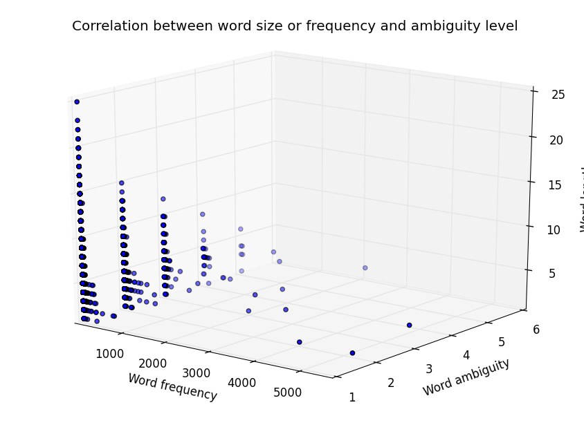

NLP12 Assignment 1: Parts of Speech Tagging: Exploring Corpora, Error Analysis
Assignment 1
Shimi Malka 066461641
Netali Alima 300712742
Our Solutions:
- Data Exploration
- Solutions for - Gathering and cleaning up data
- Solutions for - Gathering basic statistics
- Solutions for - Is there a correlation between word size or frequency and ambiguity level?
- Solutions for - Unigram and Affix Tagger
- Fine-grained Error Analysis
- Solutions for - Known vs. Unknown Accuracy
- Solutions for - Per Tag Precision and Recall
- Solutions - for Confusion Matrix
- Solutions for - Sensitivity to the Size and Structure of the Training Set: Cross-Validation
- Solutions - for Stratified Samples
Data Exploration
Gathering and Cleaning Up Data
google.py
import urllib2
import re
from xgoogle.BeautifulSoup import BeautifulSoup
def google(search,tokenizer):
search = search.replace(" ","%20")
url = 'http://www.google.com/search?q='+search
user_agent = 'Mozilla/4.0 (compatible; MSIE 5.5; Windows NT)'
headers = {'User-Agent' : user_agent}
req = urllib2.Request(url, None, headers)
response = urllib2.urlopen(req)
html = response.read()
soup = BeautifulSoup(html)
html = soup.prettify().split("\n")
html = html[167 :]
html = "\n".join(html)
links =re.findall(r"url\?q=(.+)&s",html)
return links
q1_1.py
import nltk
import urllib2
import google
import justext
from nltk.corpus import brown
def main():
s = q1_1()
#####################################################################################################
#First Part getting about 50 sentences using google search and tagged them with an automatic tagger #
#write the text without the tags to cleanText.txt file and the tagged text to tagText file #
#####################################################################################################
# sentences = s.getTextFromWeb()
# text = ""
# for sen in sentences:
# text = text + sen + "\n"
# clean_file = open('cleanText.txt', 'w')
# clean_file.write(text)
# clean_file.close()
# s.tagTextAndWriteToFile(sentences)
#########################################################
# Second Part after inserting tagged files to the Corpus#
#########################################################
#ca45 => first human tagged file
#ca46 => second human tagged file
#ca47 => automatic tagger tagged file
dif1 = s.Compare_files('ca45', 'ca46') #compare 2 human taggs
dif2 = s.Compare_files('ca47', 'ca45') #compare first human taggs to auto tagger
dif3 = s.Compare_files('ca47', 'ca46') #compare second human taggs to auto tagger
s.write_differences_to_dif_file(dif1, 'Dif2Human.txt')
s.write_differences_to_dif_file(dif2, 'DifFirstHumanToAuto.txt')
s.write_differences_to_dif_file(dif3, 'DifSecondtHumanToAuto.txt')
print "end"
class q1_1(object):
# getting Bigram->Unigram->affix->regexp->DefaultNN tagger
def getTagger(self):
brown_news_tagged = brown.tagged_sents(categories='news')
nn_tagger = nltk.DefaultTagger('NN')
regexp_tagger = nltk.RegexpTagger([(r'^-?[0-9]+(.[0-9]+)?$', 'CD'), # cardinal numbers
(r'(The|the|A|a|An|an)$', 'AT'), # articles
(r'.*able$', 'JJ'), # adjectives
(r'.*ness$', 'NN'), # nouns formed from adjectives
(r'.*ly$', 'RB'), # adverbs
(r'.*s$', 'NNS'), # plural nouns
(r'.*ing$', 'VBG'), # gerunds
(r'.*ed$', 'VBD'), # past tense verbs
(r'.*', 'NN') # nouns (default)
],backoff=nn_tagger)
affix_tagger = nltk.AffixTagger(brown_news_tagged, backoff=regexp_tagger)
ut3 = nltk.UnigramTagger(brown_news_tagged, backoff=affix_tagger)
ct2 = nltk.NgramTagger(2, brown_news_tagged, backoff=ut3)
return ct2
#split the whole text to sentences using . or ? or ! as delimeters
def segment_sentences(self,words):
start = 0
sents = []
for i, word in enumerate(words):
if word in '.?!': #and classifier.classify(punct_features(words, i)) == True:
sents.append(words[start:i+1])
start = i+1
if start < len(words):
sents.append(words[start:])
return sents
#getting text from web using google search
#(google.py -> we edited this file we got from our course web to adjust to our code)
def getTextFromWeb(self):
num_results = 10
search_list = ["bbc", "Little Red Riding Hood"]
sites = []
text = []
results = []
while len(search_list)!=0 and len(results) < num_results:
search = search_list.pop()
results = results + google.google(search,nltk.word_tokenize)
for d in results:
sites.append(d)
if len(sites) == num_results:
break
for url in sites:
print url
try:
page = urllib2.urlopen(url).read()
except urllib2.HTTPError, e:
print "Search failed: %s" % e
continue
paragraphs = justext.justext(page, justext.get_stoplist('English'))
if len(text) < 50:
for paragraph in paragraphs:
if paragraph['class'] == 'good' and len(text) < 50:
sentences = self.segment_sentences(paragraph['text'].encode('utf8'))
for s in sentences:
if not text.__contains__(s):
text.append(s)
return text
#tagging the text we got from the web using the tagger we defined above and write it to tagText file
def tagTextAndWriteToFile(self,sentences):
tag_file = open('tagText', 'w')
tagger = self.getTagger()
for sentence in sentences:
tagged_sen = tagger.tag(sentence.split())
for w,t in tagged_sen:
tag_file.write(w + "/" + t + " ")
tag_file.write("\n")
tag_file.close()
#comparing 2 files in the brown corpus and returning a list with all the words that are different
#we assume we are talking on the same file and the only thing that can be different is the tag for each word
def Compare_files(self, firstName, secondName):
differences = []
if firstName == 'ca47':#the tagger tag file is tagged in full mode
file1Sentences = brown.tagged_sents(fileids=[firstName], simplify_tags=True)
else:#our files were tagged in simplify mode
file1Sentences = brown.tagged_sents(fileids=[firstName])
file2Sentences = brown.tagged_sents(fileids=[secondName])
i = 0
while len(file1Sentences) != i:
sen1 = file1Sentences[i]
sen2 = file2Sentences[i]
i = i + 1
while len(sen1) != 0:
tw1 = sen1.pop()
tw2 = sen2.pop()
w1, t1 = tw1
w2, t2 = tw2
if w1 == w2 and t1 != t2:
differences.append(w1)
return differences
#getting a list of words and file name and write the content of the list to the file
def write_differences_to_dif_file(self, dif, difFileName):
dif_file = open(difFileName, 'w')
for w in dif:
dif_file.write(w + " / ")
dif_file.close()
if __name__ == '__main__':
main()
It took us 2 hours to check the tagging for 50 sentences
the differences between Shimi's tags and the tags produced by the automatic tagger:
Perrault / was / little / upon / Once / still / doted / grandmother / her; / fond / was / her. / made / riding / little / had / This / Riding / Little / everybody / that / well / extremely / so / suited / very / been / hear / for / doing, / grandmother / see / dear, / "Go, / her, / some / made / having / of / this / Take / " / another / to / out / Little / nearby / some / not, / dared / up, / eat / very / had / with / was / going. / was / He / from / butter / of / pot / little / a / and / cake / a / her / carry / and / grandmother / am / "I / him, / talk / stay / dangerous / was / that / know / not / did / off? / far / live / "Does / " / first / there, / that / beyond / "it / Little / answered / say," / "Oh / too. / I'll / "and / "Well," / that, / this / I'll / flowers. / little / gathering / nuts, / gathering / roundabout / little / could, / fast / at / long / not / was / tap. / tap, / at / there? / "Who's / little / brought / "who / Red / Little / "Your / up. / "Pull / out, / cried / was / was / eaten. / had / than / more / been / for / up / ate / immediately / opened, / pulled / tap. / tap, / at / some / Red / Little / grandmother's / shut / you. / sends / little / Red / Little / grandchild / "It / answered, / was / cold / had / grandmother / afraid; / first / at / was / hearing / Red / Little / up. / "Pull / could, / much / her, / to / opened. / pulled / Red / Little / me. / with / little / "Put / her, / in, / come / off / Red / Little / have! / her, / grandmother / was / dear. / with, / hug / to / "All / have! / with, / run / to / "All / have! / with, / to / "All / have! / with, / to / "All / got! / with. / up / to / "All / up. / ate / Red / Little / this / these / And, / provide / well / if / never / well / especially / Moral: / wolves. / at / pursue / sweet, / complacent, / unassuming, / polite, / quiet, / charming, / those / also / ones / dangerous / most / wolves / gentle / these / Jacob / little / sweet / Once / know / not / all / most / her, / red / made / little / Once / Little / as / all / wear / her / suited
the differences between Netali's tags and the tags produced by the automatic tagger:
Perrault / seen. / was / little / upon / still / grandmother / her; / fond / was / her. / riding / little / had / This / Riding / Little / everybody / that / well / extremely / so / very / been / for / doing, / grandmother / "Go, / her, / some / made / this / " / another / to / immediately / out / Riding / Little / some / not, / dared / very / had / was / going. / was / little / grandmother / "I / him, / was / that / did / far / "Does / " / there, / that / beyond / "it / Riding / Little / answered / say," / I'll / "and / first. / that, / this / I'll / flowers. / little / gathering / gathering / by / little / could, / before / was / there? / "Who's / little / "who / Riding / Little / "Pull / cried / somewhat / was / was / eaten. / had / since / more / been / up / ate / upon / opened, / pulled / some / came / Riding / Little / shut / you. / sends / little / brought / has / Riding / Little / grandchild / "It / answered, / was / cold / had / grandmother / afraid; / was / hearing / Riding / Little / "Pull / could, / much / her, / cried / opened. / pulled / Riding / Little / me. / little / "Put / himself / her, / in, / Riding / Little / have! / her, / grandmother / amazed / was / with, / hug / to / have! / with, / run / to / have! / with, / to / have! / to / better / got! / up / you / to / all / ate / Riding / Little / upon / this / these / And, / well / so, / if / never / bred / attractive, / especially / wolves. / are / pursue / sweet, / complacent, / unassuming, / polite, / quiet, / charming, / are / those / also / are / most / are / wolves / gentle / these / unfortunately, / Jacob / little / sweet / was / upon / did / all / most / her, / made / little / Little / all / well, / so / suited
the differences between Netali's tags and Shimi's tags :
seen. / upon / Once / doted / was / made / riding / had / This / Riding / that / well / suited / hear / see / dear, / having / of / this / Take / " / immediately / out / Riding / nearby / some / not, / up, / eat / had / with / was / was / He / from / butter / of / pot / little / a / and / cake / a / her / carry / and / grandmother / am / talk / stay / dangerous / know / not / did / off? / far / live / "Does / " / first / that / beyond / Riding / "Oh / too. / "and / "Well," / first. / this / nuts, / by / roundabout / fast / at / before / long / not / tap. / tap, / at / brought / Riding / Red / "Your / up. / out, / somewhat / since / than / been / for / up / ate / upon / immediately / tap. / tap, / at / came / Riding / Red / grandmother's / shut / brought / has / Riding / Red / first / at / Riding / Red / up. / could, / much / to / cried / Riding / Red / with / himself / come / off / Riding / Red / amazed / dear. / "All / "All / "All / with, / better / "All / got! / with. / up / you / "All / up. / all / Riding / Red / upon / this / provide / well / so, / bred / well / attractive, / Moral: / are / at / are / those / also / are / ones / dangerous / most / are / unfortunately, / was / upon / Once / know / not / did / most / red / made / Once / as / wear / well, / so / her
Errors met while dealing with the Google engine:
We met errors about illigal url sometimes.
Errors met while downloading the material from the Google hits:
No errors met
Errors met while cleaning up the HTML pages:
There are some symbols that make the cleaning more complex and very hard to clean them.
Errors met while segmenting the text into sentences and words:
We segmented sentences with . or ? or ! delimiters, but is it really a good determinition?!
For example the dots in U.S.A -> this is not 3 sentences, it is one word, and our program will decide to see this as 3 sentences.
We segmented word with space delimiter, but again is it a good determinition?!
For example "The child went to play with the computer." -> we said the "children." is a word but maybe it isn't right to say this,
becasue we should take this as the word children and the word "."
Another example "Bred learn in High School" -> the phrase "High School", is it one word or 2 words?! we took it as 2 words,
and the tagger will tag it like this High/ADJ school/N, but we all know that we nned to tag it as one word with the tag N.
Errors met by the automatic tagger:
Every word with a sign at the end of it like "child." was tagged as N even if it wasn't a N.
It happens because we took "me." as a word and not 2 words "me" "."
Gathering Basic Statistics
#function that plots the number of words having a given number of tags.
#The X-axis should show the number of tags and
#the Y-axis the number of words having exactly this number of tags.
#corpus - tagged_words
def PlotNumberOfTags(corpus):
fd1 = nltk.FreqDist(corpus)
difCouples = fd1.keys()
words = [w for (w,t) in difCouples]
fd2 = nltk.FreqDist(words)
cfd = nltk.ConditionalFreqDist((fd2[word], word) for word in fd2.keys())
tags_n = pylab.arange(15)
perfs = [cfd[n].__len__() for n in tags_n]
pylab.plot(tags_n, perfs)
pylab.title('The number of words having a given number of tags')
pylab.xlabel('Number of tags')
pylab.ylabel('Number of words')
pylab.grid(True)
pylab.show()
# function that finds words with more than N observed tags
def MostAmbiguousWords(corpus, n):
difCouples = nltk.FreqDist(corpus).keys()
word_by_num_of_tags = nltk.FreqDist([w for (w,t) in difCouples])
cfd = nltk.ConditionalFreqDist()
for (w,t) in difCouples:
if word_by_num_of_tags[w] >= n :
cfd[w].inc(t)
return cfd
#test function that verifies that the words indeed have more than N distinct tags in the returned value.
def TestMostAmbiguousWords(cfd, N):
word_with_more_then_n = cfd.conditions()
ccfd = nltk.ConditionalFreqDist()
tagWords = brown.tagged_words(categories='news')
for (x,y) in tagWords:
if word_with_more_then_n.count(x)!= 0 :
ccfd[x].inc(y)
for w in ccfd.conditions():
if len(ccfd[w]) < N:
print "Not all words occur with more than %d tags." %N
return
print "All words occur with more than %d tags." %N
#finds one example of usage of the word with each of the different tags in which it can occur.
def ShowExamples(word, cfd, corpus):
tag_sents = brown.tagged_sents(categories='news')
for w in cfd.conditions():
if w == word :
for t in cfd[w]:
for s in tag_sents:
if s.count((w,t))!= 0:
sent = ' '.join(b for (b,f) in s)
print "\'%s\'" % w +"as %s: " % t + sent
break
def main():
tagWords = brown.tagged_words(categories='news')
PlotNumberOfTags(tagWords)
cfd = MostAmbiguousWords(tagWords, 3)
TestMostAmbiguousWords(cfd, 3)
ShowExamples('the', cfd, tagWords)
if __name__ == '__main__':
main()

We expect this distribution to exhibit a "long tail" form. Do you confirm this hypothesis?
Answer: It is long tail, as was told in class - most words are clear and esy to tag them,
and less and less words are ambigus.
Is there a correlation between word size or frequency and ambiguity level?

Describe what you observe. Does the plot support a hypothesis about correlation?
Answer: It is not so clear but you can see that there are a lot of short(5 chars) words with 2 tags
and as the word getting longer the freq is getting smaller, but the ambigutiy not hav any connection to
the length of the word.
Unigram and Affix Tagger
Unigram Tagger
import nltk
from nltk.corpus import brown
import numpy as np
from nltk.probability import FreqDist, ConditionalFreqDist
# a class SimpleUnigramTagger directly inherits from nltk.TaggerI
# implements a unigram tagger in the simplest possible manner.
class SimpleUnigramTagger (nltk.TaggerI):
def __init__(self, train,backoff=None):
self._dictionary = []
for w in train:
self._dictionary.extend(w)
self._cfd = nltk.ConditionalFreqDist(self._dictionary)
if backoff is None:
self._taggers = [self]
else:
self._taggers = [self] + backoff._taggers
def _get_backoff(self):
if len(self._taggers) < 2: return None
else: return self._taggers[1]
backoff = property(_get_backoff, doc='''The backoff tagger for this tagger.''')
def tag(self, tokens):
# docs inherited from TaggerI
tags = []
for i in range(len(tokens)):
tags.append(self.tag_one(tokens, i, tags))
return zip(tokens, tags)
def tag_one(self, tokens, index, history):
tag = None
for tagger in self._taggers:
tag = tagger.choose_tag(tokens, index, history)
if tag is not None: break
return tag
def choose_tag(self, tokens, index, history):
return self._cfd[tokens[index]].max() # take the most freq tag known for this token
def main():
brown_news_tagged = brown.tagged_sents(categories='news')
brown_train = brown_news_tagged[100:]
brown_test = brown_news_tagged[:100]
nn_tagger = nltk.DefaultTagger('NN')
ut2 = nltk.UnigramTagger(brown_train, backoff=nn_tagger)
simpleUnigramTagger = SimpleUnigramTagger(brown_train, backoff=nn_tagger)
print 'Simple Unigram tagger accuracy: %4.1f%%' % ( 100.0 * simpleUnigramTagger.evaluate(brown_test))
print 'Unigram tagger accuracy: %4.1f%%' % ( 100.0 * ut2.evaluate(brown_test))
if __name__ == '__main__':
main()
Output:
Simple Unigram tagger accuracy: 86.5%
Unigram tagger accuracy: 86.5%
Affix Tagger
import nltk
from nltk.corpus import brown
import numpy as np
from nltk.probability import FreqDist, ConditionalFreqDist
# try fo find the best cutoff parameter to tagger eith entropy
# run over the development words
def optimize_parameter():
brown_news_tagged = brown.tagged_sents(categories='news')
brown_train = brown_news_tagged[:int(0.8*len(brown_news_tagged))]
rest = brown_news_tagged[int(0.8*len(brown_news_tagged)):]
brown_development = rest[:int(0.5*len(rest))]
brown_test = rest[int(0.5*len(rest)):]
opt_cut_of = 0
best_accu = 0
for cut_off in range(0,10):
affix_tagger = nltk.AffixTagger(brown_train ,backoff=None , cutoff=cut_off)
accu = 100.0 * affix_tagger.evaluate(brown_development)
if accu > best_accu :
best_accu = accu
opt_cut_of = cut_off
return opt_cut_of
# return entropy like the formula H(x) = sum(P(xi)*log(P(xi)))
# tag_ probd - the P(xi) for all tags
# tl - list of tags
def _H(self, tl, tag_probs):
ans = 0
for t in tl:
i = [x[0] for x in tag_probs].index(t)
p = tag_probs[i][1]
ans += p*np.log2(p)
return -ans
def _train(self, tagged_corpus, cutoff=0, verbose=False):
token_count = hit_count = 0
useful_contexts = set()
fd = ConditionalFreqDist()
tag_prob = FreqDist()
for sentence in tagged_corpus:
tokens, tags = zip(*sentence)
for index, (token, tag) in enumerate(sentence):
# Record the event.
token_count += 1
tag_prob.inc(tag)
context = self.context(tokens, index, tags[:index])
if context is None: continue
fd[context].inc(tag)
# If the backoff got it wrong, this context is useful:
if (self.backoff is None or
tag != self.backoff.tag_one(tokens, index, tags[:index])):
useful_contexts.add(context)
# Build the context_to_tag table -- for each context,
# calculate the entropy. Only include contexts that
# lower then `cutoff` .
total_tags = float(sum(tag_prob.values()))
tags_probs = [(t,tag_prob[t]/total_tags) for t in tag_prob.keys()]
useful_contexts_after_filter = useful_contexts.copy()
most_high = FreqDist()
for context in useful_contexts:
dd = fd[context]
# total_tags = float(sum(dd.values()))
# tags_probs = [(t,dd[t]/total_tags) for t in dd.keys()]
h = self.H(dd.keys(),tags_probs)
if h > cutoff:
useful_contexts_after_filter.remove(context)
continue
most_high[context] = h
# print most_high.keys()
# Build the context_to_tag table -- for each context, figure
# out what the most likely tag is.
for context in useful_contexts_after_filter:
best_tag = fd[context].max()
hits = fd[context][best_tag]
self._context_to_tag[context] = best_tag
hit_count += hits
# Display some stats, if requested.
if verbose:
size = len(self._context_to_tag)
backoff = 100 - (hit_count * 100.0)/ token_count
pruning = 100 - (size * 100.0) / len(fd.conditions())
print "[Trained Unigram tagger:",
print "size=%d, backoff=%.2f%%, pruning=%.2f%%]" % (size, backoff, pruning)
def main():
brown_news_tagged = brown.tagged_sents(categories='news')
brown_train = brown_news_tagged[:int(0.8*len(brown_news_tagged))]
rest = brown_news_tagged[int(0.8*len(brown_news_tagged)):]
brown_development = rest[:int(0.5*len(rest))]
brown_test = rest[int(0.5*len(rest)):]
affix_tagger = nltk.AffixTagger(brown_train, backoff= nltk.DefaultTagger('NN') , cutoff=2)
nltk.AffixTagger._train = _train
nltk.AffixTagger.H = _H
optcutoff = optimize_parameter()
print "the optimal cutoff param is: %d " % optcutoff
affix_tagger2 = nltk.AffixTagger(brown_train, backoff= nltk.DefaultTagger('NN') , cutoff=optcutoff)
print 'Unigram tagger accuracy: %4.1f%%' % ( 100.0 * affix_tagger.evaluate(brown_test))
print 'Unigram tagger accuracy with entropy: %4.1f%%' % ( 100.0 * affix_tagger2.evaluate(brown_test))
Output:
the optimal cutoff param is: 2
Unigram tagger accuracy: 27.0%
Unigram tagger accuracy with entropy: 27.3%
Observations:
- does entropy filtering improve accuracy?
Answer: as you can see - yes
- how do you determine the range of values to test for the cutoff?
Answer: we run the optimal function few times and saw that after 2-5 times the accuracy is stay stable
so we take the range 1-10.
- is the accuracy value evolving in a predictable manner as the cutoff varies?
Answer: yes - it is raising and fix on one value for the rest of the run.
- describe the list of suffixes that are good tag predictors -- are you surprised by what you observe?
Answer: ['ard', 'ter', 'ght', 'und', 'her', 'ing', 'nce', 'ove', 'der', 'ite', 'ugh', 'ide', 'est', 'ent', 'ore', ...]
not surprising at all, those are the most common suffiex in English.
Fine-Grained Accuracy and Error Analysis
Known vs. Unknown Accuracy
import nltk
from itertools import izip
from nltk.corpus import brown
from nltk.probability import FreqDist
# return the accuracy for Unknown words and for known words-
# words that tag with UNKNOWN are unknown words
# we take all unkown words and assums they will be taged as "NN" , and calculate the
# number of correct "NN" from the all unkown words
# same for known words
def evaluate2(self,gold):
tagged_sents = self.batch_tag([[w for (w, t) in sent] for sent in gold])
gold_tokens = sum(gold, [])
test_tokens = sum(tagged_sents, [])
num_unknown_correct = 0
num_unknown = 0
num_known_correct = 0
num_known = 0
for x, y in izip(gold_tokens, test_tokens):
if y[1] == 'UNKNOWN':
num_unknown +=1
if x[1] == "NN":
num_unknown_correct += 1
else:
num_known +=1
if x[1] == y[1]:
num_known_correct += 1
if num_unknown == 0 | num_known == 0: return (1,1)
return (float(num_unknown_correct) / num_unknown , float(num_known_correct) / num_known )
def main():
nltk.TaggerI.evaluate2 = evaluate2
brown_news_tagged = brown.tagged_sents(categories='news')
brown_train = brown_news_tagged[100:]
brown_test = brown_news_tagged[:100]
regexp_tagger = nltk.RegexpTagger([(r'^-?[0-9]+(.[0-9]+)?$', 'CD'), # cardinal numbers
(r'(The|the|A|a|An|an)$', 'AT'), # articles
(r'.*able$', 'JJ'), # adjectives
(r'.*ness$', 'NN'), # nouns formed from adjectives
(r'.*ly$', 'RB'), # adverbs
(r'.*s$', 'NNS'), # plural nouns
(r'.*ing$', 'VBG'), # gerunds
(r'.*ed$', 'VBD'), # past tense verbs
(r'.*', 'UNKNOWN') # unkonwn (default)
],backoff=None)
at2 = nltk.AffixTagger(brown_train, backoff=regexp_tagger)
ut3 = nltk.UnigramTagger(brown_train, backoff=at2)
ct2 = nltk.NgramTagger(2, brown_train, backoff=ut3)
e = regexp_tagger.evaluate2(brown_test)
print "evaluate2 regExp(default unknown) = accoracy unkown words: %f ,accuracy known words: " %e[0],e[1]
e = at2.evaluate2(brown_test)
print "evaluate2 affix(regExp(default unknown)) = accoracy unkown words: %f ,accuracy known words: " %e[0],e[1]
e= ut3.evaluate2(brown_test)
print "evaluate2 unigram(affix(regExp(default unknown))) = accoracy unkown words: %f ,accuracy known words: " %e[0],e[1]
e= ct2.evaluate2(brown_test)
print "evaluate2 bigram(unigram(affix(regExp(default unknown)))) = accoracy unkown words: %f ,accuracy known words: " %e[0],e[1]
if __name__ == '__main__':
main()
Output:
evaluate2 regExp(default unknown) = accoracy unkown words: 0.202108 ,accuracy known words: 0.647328244275
evaluate2 affix(regExp(default unknown)) = accoracy unkown words: 0.086470 ,accuracy known words: 0.652140077821
evaluate2 unigram(affix(regExp(default unknown))) = accoracy unkown words: 0.050000 ,accuracy known words: 0.894572953737
evaluate2 bigram(unigram(affix(regExp(default unknown)))) = accoracy unkown words: 0.050000 ,accuracy known words: 0.908362989324
Per Tag Precision and Recall
#tag both in the test and by the tagger
def calcTP(tag, CorpusTags, TaggerTags):
tp = 0
for x, y in izip(CorpusTags, TaggerTags):
w,t = x
if x == y and t == tag :
tp += 1
return tp
#non-tag both in the test and by the tagger
def calcTN(tag, CorpusTags, TaggerTags):
tn = 0
for x, y in izip(CorpusTags, TaggerTags):
testw,testTag = x
taggerw,taggerTag = y
if testw == taggerw and testTag != tag and taggerTag != tag :
tn += 1
return tn
#non-tag by the test and tag by the tagger
def calcFP(tag, CorpusTags, TaggerTags):
fp = 0
for x, y in izip(CorpusTags, TaggerTags):
testw,testTag = x
taggerw,taggerTag = y
if testw == taggerw and testTag != tag and taggerTag == tag :
fp += 1
return fp
#tag by the test and non tag by the tagger
def calcFN(tag, CorpusTags, TaggerTags):
fn = 0
for x, y in izip(CorpusTags, TaggerTags):
testw,testTag = x
taggerw,taggerTag = y
if testw == taggerw and testTag == tag and taggerTag != tag :
fn += 1
return fn
#Precision(T) = TP / TP + FP
def calcPrec(tag, CorpusTags, TaggerTags):
tp = calcTP(tag, CorpusTags, TaggerTags)
fp = calcFP(tag, CorpusTags, TaggerTags)
if tp+fp == 0:
prec = 0
else:
prec = float(float(tp)/(tp+fp))
return prec
#Recall(T) = TP / TP + FN
def calcRecall(tag, CorpusTags, TaggerTags):
tp = calcTP(tag, CorpusTags, TaggerTags)
fn = calcFN(tag, CorpusTags, TaggerTags)
if tp + fn == 0:
recall = 0
else:
recall = float(float(tp)/(tp+fn))
return recall
#F-Measure(T) = 2 x Precision x Recall / (Recall + Precision)
def calcFMeasur(tag, CorpusTags, TaggerTags):
prec = calcPrec(tag, CorpusTags, TaggerTags)
recall = calcRecall(tag, CorpusTags, TaggerTags)
if recall + prec == 0:
fMeasure = 0
else:
fMeasure = float((2 * prec * recall)/(recall + prec))
return fMeasure
#this function were added to the TaggerI interface -> e can see this in the main function
def MicroEvaluate(self,corpus_test):
tagged_sents = self.batch_tag([nltk.untag(sent) for sent in corpus_test])#tagger tagged
testTokens = sum(corpus_test,[]) # real tags from the corpus
taggerTokens = sum(tagged_sents,[]) # tags of the tagger that in used
tags = [] #all possible tags------------------TODO
for x in testTokens:
w,t = x
if not tags.__contains__(t):
tags.append(t)
fmeasure = 0
for tag in tags:
fmeasure += calcFMeasur(tag, testTokens, taggerTokens)
if len(tags) == 0:
return 0
return fmeasure / len(tags)
To Check these Functions (precision and recall) we wrote 2 functions:
1. checkTaggerPrecForTag(tagger, tag, testCorpus)
2. checkTaggerRecallForTag(tagger, tag, testCorpus)
And we run them twice with the default tagger (NN), for the first time with the tag "NN" and the second time with the tag "AT".
Expected precision(for the default tag) = same value as evaluate function of TaggerI interface
because TP = no. of words that the tagger tagged right
FP = no. of words that in the tagger tagged as 'chosen tag'
and the corpusTest tagged as different than the 'chosen tag'
=> TP + FP = no. of words in the test
Expected recall(for the default tag) = 1
because FN = 0 for the default tag (the tagger give each word the default tag)
For any other tag the values should be 0 because TP = 0 for each tag
def checkTaggerPrecForTag(tagger, tag, testCorpus):
tagged_sents = tagger.batch_tag([nltk.untag(sent) for sent in testCorpus])#tagger tagged
testTokens = sum(testCorpus,[]) # real tags from the corpus
taggerTokens = sum(tagged_sents,[]) # tags of the tagger that in used
return calcPrec(tag, testTokens, taggerTokens)
def checkTaggerRecallForTag(tagger, tag, testCorpus):
tagged_sents = tagger.batch_tag([nltk.untag(sent) for sent in testCorpus])#tagger tagged
testTokens = sum(testCorpus,[]) # real tags from the corpus
taggerTokens = sum(tagged_sents,[]) # tags of the tagger that in used
return calcRecall(tag, testTokens, taggerTokens)
We also can see that the FMeasure avg for the testCorpus is increasing when we improve the taggers (microEvaluate function results),
same as the original evaluate function of the TaggerI interface.
Our Output:
evaluate default nn = 0.14594356261
evaluate regExp(default nn) = 0.330687830688
evaluate affix(regExp(default nn)) = 0.4069664903
evaluate unigram(affix(regExp(default nn))) = 0.887125220459
evaluate bigram(unigram(affix(regExp(default nn)))) = 0.900793650794
micro-evaluate default nn = 0.00299662766222
micro-evaluate regExp(default nn) = 0.0511631070415
micro-evaluate affix(regExp(default nn)) = 0.19422104697
micro-evaluate unigram(affix(regExp(default nn))) = 0.765386700349
micro-evaluate bigram(unigram(affix(regExp(default nn)))) = 0.802520278712
default nn prec tag = AT => 0
default nn recall tag = AT => 0.0
default nn prec tag = NN => 0.14594356261
default nn recall tag = NN => 1.0
Which tags are most difficult in the simplified tagset? In the full tagset?
Answer: Precision of Certain tag means How often the tagger is correct in the dataset when it predicts the tag.
That's why we can say that if the precision of a certain tag is low then the tagger often wrong about this tag.
In conclusion we can say that the tags with the lowest precision are the difficult tags.
We Implemented few functions to deal with this issue:
1.getTaggerAndTestSetInSimplifiedMode(taggerName):
Given a tagger name (DefaultTagger,RegExpTagger,AffixTagger,UnigramTagger,BigramTagger) -
each tagger is the backoff of the next one,
the function defines the tagger, the train and test sets with the simplified tags set and returning the tagger and the test set.
2.getDifficultTags(tagger, testCorpus, x, tagsSet):
Given a tagger, testSet, tagsSet and x (no. of difficult tags wanted),
returns list of difficult tags for the requested tagger.
3.checkSimplifiedDifficultTags(taggerName, x):
Given a tagger Name and no. of requested difficult tags, returned the difficult tags.
Of course that this function defined the simplified tags set and calls getDifficultTags func and getTaggerAndTestSetInSimplifiedMode func.
4.checkFullDifficultTags(tagger, testCorpus, x):
Given a tagger and no. of requested difficult tags, returned the difficult tags.
Of course that this function defined the full tags set and calls getDifficultTags func.
The Results for the 4 most difficult tags are:
simplified tagset => ['FW', 'UH', 'VG', 'TO']
full tagset => ['NN-HL', 'VBN-HL', 'VBG-TL', 'NNS-HL']
########################################################################
#defining the simplified taggers and the simplified test and train sets#
#and returning the requested tagger and the test set #
########################################################################
def getTaggerAndTestSetInSimplifiedMode(taggerName):
brown_news_taggedS = brown.tagged_sents(categories='news', simplify_tags=True)
brown_trainS = brown_news_taggedS[100:]
brown_testS = brown_news_taggedS[:100]
nn_taggerS = nltk.DefaultTagger('NN')
regexp_taggerS = nltk.RegexpTagger([(r'^-?[0-9]+(.[0-9]+)?$', 'CD'), # cardinal numbers
(r'(The|the|A|a|An|an)$', 'AT'), # articles
(r'.*able$', 'JJ'), # adjectives
(r'.*ness$', 'NN'), # nouns formed from adjectives
(r'.*ly$', 'RB'), # adverbs
(r'.*s$', 'NNS'), # plural nouns
(r'.*ing$', 'VBG'), # gerunds
(r'.*ed$', 'VBD'), # past tense verbs
(r'.*', 'NN') # nouns (default)
],backoff=nn_taggerS)
at2S = nltk.AffixTagger(brown_trainS, backoff=regexp_taggerS)
ut3S = nltk.UnigramTagger(brown_trainS, backoff=at2S)
ct2S = nltk.NgramTagger(2, brown_trainS, backoff=ut3S)
if taggerName == "DefaultTagger":
return nn_taggerS,brown_testS
else:
if taggerName == "RegExpTagger":
return regexp_taggerS, brown_testS
else:
if taggerName == "AffixTagger":
return at2S,brown_testS
else:
if taggerName == "UnigramTagger":
return ut3S,brown_testS
else:
if taggerName == "BigramTagger":
return ct2S,brown_testS
##########################################################################################################################
#Check which X tags are difficult in the dataset. #
#to check this we need to calculate precision for each tag and the tags with the lowest precision are the difficult tags.#
##########################################################################################################################
def getDifficultTags(tagger, testCorpus, x, tagsSet):
difficultTags = []
precs = []
#defining which tags are we checking full or simplified tags if simplified -> getting the tagger and the testCorpus according to simplified tags set
corpusTokens = sum(testCorpus, [])
#calculating precision for each tag
tagger_tags = tagger.batch_tag([nltk.untag(sent) for sent in testCorpus])
taggedTokens = sum(tagger_tags, [])
for t in tagsSet:
p = calcPrec(t, corpusTokens, taggedTokens)
precs.append((t,p))
#insert x lowest tags to difficultTags
precs = sorted(precs, key=itemgetter(1))
for w,p in precs:
if len(difficultTags) < x:
difficultTags.append(w)
return difficultTags
#############################################################
#############################################################
#Check which X tags are difficult in the simplified tagsSet.#
#############################################################
#############################################################
def checkSimplifiedDifficultTags(taggerName, x):
tagger, testCorpus = getTaggerAndTestSetInSimplifiedMode(taggerName)
tags = ['ADJ', 'ADV', 'CNJ', 'DET', 'EX', 'FW', 'MOD', 'N', 'NP', 'NUM', 'PRO', 'P', 'TO', 'UH', 'V', 'VD', 'VG', 'VN', 'WH']
return getDifficultTags(tagger, testCorpus, x, tags)
###################
#get full tagsSet.#
###################
def getFullTagsList():
ans = []
brown_news_tagged = brown.tagged_sents()
for sen in brown_news_tagged:
for w,t in sen:
if not ans.__contains__(t):
ans.append(t)
return ans
#######################################################
#Check which X tags are difficult in the full tagsSet.#
#######################################################
def checkFullDifficultTags(tagger, testCorpus, x):
tags = getFullTagsList()
return getDifficultTags(tagger, testCorpus, x, tags)
Our Main Function that computes all the outputs described in this section:
def main():
nltk.TaggerI.MicroEvaluate = MicroEvaluate
brown_news_tagged = brown.tagged_sents(categories='news')
brown_train = brown_news_tagged[100:]
brown_test = brown_news_tagged[:100]
nn_tagger = nltk.DefaultTagger('NN')
regexp_tagger = nltk.RegexpTagger([(r'^-?[0-9]+(.[0-9]+)?$', 'CD'), # cardinal numbers
(r'(The|the|A|a|An|an)$', 'AT'), # articles
(r'.*able$', 'JJ'), # adjectives
(r'.*ness$', 'NN'), # nouns formed from adjectives
(r'.*ly$', 'RB'), # adverbs
(r'.*s$', 'NNS'), # plural nouns
(r'.*ing$', 'VBG'), # gerunds
(r'.*ed$', 'VBD'), # past tense verbs
(r'.*', 'NN') # nouns (default)
],backoff=nn_tagger)
at2 = nltk.AffixTagger(brown_train, backoff=regexp_tagger)
ut3 = nltk.UnigramTagger(brown_train, backoff=at2)
ct2 = nltk.NgramTagger(2, brown_train, backoff=ut3)
print "evaluate default nn = " , nn_tagger.evaluate(brown_test)
print "evaluate regExp(default nn) = " ,regexp_tagger.evaluate(brown_test)
print "evaluate affix(regExp(default nn)) = " ,at2.evaluate(brown_test)
print "evaluate unigram(affix(regExp(default nn))) = " ,ut3.evaluate(brown_test)
print "evaluate bigram(unigram(affix(regExp(default nn)))) = " ,ct2.evaluate(brown_test)
print ""
print "micro-evaluate default nn = ", nn_tagger.MicroEvaluate(brown_test)
print "micro-evaluate regExp(default nn) = ", regexp_tagger.MicroEvaluate(brown_test)
print "micro-evaluate affix(regExp(default nn)) = ", at2.MicroEvaluate(brown_test)
print "micro-evaluate unigram(affix(regExp(default nn))) = ", ut3.MicroEvaluate(brown_test)
print "micro-evaluate bigram(unigram(affix(regExp(default nn)))) = ", ct2.MicroEvaluate(brown_test)
print ""
print "default nn prec tag = AT => " , checkTaggerPrecForTag(nn_tagger, 'AT', brown_test)
print "default nn recall tag = AT => " , checkTaggerRecallForTag(nn_tagger, 'AT', brown_test)
print ""
print "default nn prec tag = NN => " , checkTaggerPrecForTag(nn_tagger, 'NN', brown_test)
print "default nn recall tag = NN => " , checkTaggerRecallForTag(nn_tagger, 'NN', brown_test)
print ""
print "4 most difficult tags in simplified tagsSet - bigramTagger with all the backoffs:", checkSimplifiedDifficultTags("BigramTagger", 4)
print "4 most difficult tags in full tagsSet - bigramTagger with all the backoffs: ", checkFullDifficultTags(ct2, brown_test, 4)
print ""
Confusion Matrix
import nltk
from itertools import izip
from nltk.corpus import brown
from nltk.probability import FreqDist
# return confusion matrix tabulates all the mistakes committed by a tagger in the form of
# a matrix C[ti, tj]. C[ti, tj] counts the number of times the tagger predicted ti instead of tj
def ConfusionMatrix(self, corpus_test):
matrix = FreqDist()
tagged_sents = self.batch_tag([nltk.untag(sent) for sent in corpus_test])
testTokens = sum(corpus_test,[]) # real tags from the corpus
taggerTokens = sum(tagged_sents,[]) # tags of the tagger that in used
for tagged, test in izip(taggerTokens, testTokens ):
if tagged != test :
matrix.inc((tagged[1],test[1]))
return matrix
def main():
nltk.TaggerI.ConfusionMatrix = ConfusionMatrix
brown_news_tagged = brown.tagged_sents(categories='news')
brown_train = brown_news_tagged[100:]
brown_test = brown_news_tagged[:100]
nn_tagger = nltk.DefaultTagger('NN')
regexp_tagger = nltk.RegexpTagger([(r'^-?[0-9]+(.[0-9]+)?$', 'CD'), # cardinal numbers
(r'(The|the|A|a|An|an)$', 'AT'), # articles
(r'.*able$', 'JJ'), # adjectives
(r'.*ness$', 'NN'), # nouns formed from adjectives
(r'.*ly$', 'RB'), # adverbs
(r'.*s$', 'NNS'), # plural nouns
(r'.*ing$', 'VBG'), # gerunds
(r'.*ed$', 'VBD'), # past tense verbs
(r'.*', 'NN') # nouns (default)
],backoff=nn_tagger)
at2 = nltk.AffixTagger(brown_train, backoff=regexp_tagger)
ut3 = nltk.UnigramTagger(brown_train, backoff=at2)
ct2 = nltk.NgramTagger(2, brown_train, backoff=ut3)
print ct2.ConfusionMatrix(brown_test)
if __name__ == '__main__':
main()
Report the confusion matrix for the full tagset and simplified tagset of the Brown corpus for the last tagger
discussed in class. Discuss the results: which pairs of tags are the most difficult to distinguish?
Output:
< FreqDist: ('NN', 'NP'): 27, ('VBD', 'VBN'): 22, ('NP', 'NP-TL'): 17, ('VBN', 'VBD'): 11, ('NN', 'VB'): 9,
('TO', 'IN'): 9, ('NN', 'JJ'): 8, ('VB', 'NN'): 5, ('NN', 'NN-HL'): 4, ('NNS', 'VBZ'): 4,
('NP-TL', 'NP'): 4, ('WRB', 'NP'): 4, ('CS', 'IN'): 3, ('JJ', 'NN'): 3, ('NN', 'NN-TL'): 3,
('NN', 'NNS'): 3, ('NN', 'VBG'): 3, ('NN$', 'NP$'): 3, ('NN-HL', 'NP'): 3, ('NN-TL', 'NN'): 3, ... >
As you can see, the pairs of tags are most difficult to distinguish are : (NN,NP) , (VBD , VBN) , (NP-TL)
and maybe this is like that cause thay are from the same family but only fine ones.
Sensitivity to the Size and Structure of the Training Set: Cross-Validation
import nltk
from nltk.corpus import brown
# cross-validation process consists of splitting the data in 10 subsets of 10% each.
# iterate the process of training/testing 10 times,
# each time withholding one subset of 10% for testing and training on the other 9 subsets.
# return the results of the accuracy as a table with rows: i (iteration number), accuracy(i)
# and accuracy averaged over the ten experiments as tuple
def crossValidate(corpus, test_precent):
summarize = []
corpus_len = len(corpus)
cut = int((test_precent/100.0)*corpus_len)
mean = 0
for i in range(0,corpus_len/cut):
test = corpus[i*cut:cut*(i+1)]
train = corpus[:i*cut]+corpus[cut*(i+1):]
nn_tagger = nltk.DefaultTagger('NN')
regexp_tagger = nltk.RegexpTagger([(r'^-?[0-9]+(.[0-9]+)?$', 'CD'), # cardinal numbers
(r'(The|the|A|a|An|an)$', 'AT'), # articles
(r'.*able$', 'JJ'), # adjectives
(r'.*ness$', 'NN'), # nouns formed from adjectives
(r'.*ly$', 'RB'), # adverbs
(r'.*s$', 'NNS'), # plural nouns
(r'.*ing$', 'VBG'), # gerunds
(r'.*ed$', 'VBD'), # past tense verbs
(r'.*', 'NN') # nouns (default)
],backoff=nn_tagger)
at2 = nltk.AffixTagger(train, backoff=regexp_tagger)
ut3 = nltk.UnigramTagger(train, backoff=at2)
ct2 = nltk.NgramTagger(2, train, backoff=ut3)
accu = float(ct2.evaluate(test))
summarize.append((i,accu))
mean += accu
return (summarize , mean/(corpus_len/cut))
def main():
brown_news_tagged = brown.tagged_sents(categories='news')
p = crossValidate(brown_news_tagged,10)
print "accuracy table:"
print p[0]
print "accuracy mean: %f" %p[1]
if __name__ == '__main__':
main()
Implement a method crossValidate(corpus, n) for trainable taggers. Report the 10-fold cross-validation results for
the last tagger discussed in class. Discuss the results:
The results:
accuracy table:
[(0, 0.8966156699119147), (1, 0.8885557738033703), (2, 0.8468651559800833), (3, 0.8648763400912854),
(4, 0.8727200239210605), (5, 0.8754255958341678), (6, 0.8653310477823013), (7, 0.8836575509820506),
(8, 0.8774696224839996), (9, 0.8832248372558839)]
accuracy mean: 0.875474
as you see - the accuracy is raising as the train go bigger
- and it was expected cause the tagger learn from the train,
so he "knows" more as the train go bigger.
Stratified Samples
First Step: Finding the distribution of sentences by length
We Created a function that calculates the no. of sentences to each sentence's length and plot a graph that describe this distribution.
In Class we said that the avg length of a sentence is 20, when we look on the graph we can see that 20 is the area where the no. of sentences is the highest.
Also we can see that from length 20 to 40 the no. of sentences is decreasing rapidly and after 40 is the tail of the graph.
As a result of this findings we decided:
The Short class will consist of sentences with length smaller than 20
The Medium Class will consist of sentences with length 20-40
The Long Class will consist of sentences with length bigger than 80
The Graph:

#plot distribution of sentences by length
def getDistSentByLength():
corpusSentences = []
cats = brown.categories()
for cat in cats:
corpusSentences = corpusSentences + brown.sents(categories=cat)
fd = nltk.FreqDist(len(sen) for sen in corpusSentences)
length = sorted(fd.keys())
noSent = [fd[n] for n in length]
pylab.plot(length, noSent)
pylab.title('Distribution of Sentences by Length')
pylab.xlabel('Length')
pylab.ylabel('Number of Sentences')
pylab.grid(True)
pylab.show()
Second Step:
Divide the sentences in the corpus to Length classes - We created a method that create this classes, and return a list of the classes.
Each class contains the tagged sentences of the requested category in the corpus according to it's length (or all categories if it doesn't specify).
def divideToLengthClasses(cat='All'):
shortC = []
mediumC = []
longC = []
taggedSentences = []
if cat == 'All':
taggedSentences = brown.tagged_sents()
else:
taggedSentences = brown.tagged_sents(categories=cat)
for sen in taggedSentences:
if len(sen) < 20:
shortC.append(sen)
else:
if len(sen) >=20 and len(sen) <= 40:
mediumC.append(sen)
else:
longC.append(sen)
return [shortC, mediumC, longC]
Third Step:
We Created a method that construct a stratified dataset given the classes.
The method returns the train and test sets.
def stratifiedSamples(classes, N):
testSet = []
trainSet = []
for cl in classes:
noSenTest = int((float(N)/100)*len(cl))
while noSenTest > 0:
r = int(random.uniform(1,len(cl)-1))
testSet.append(cl.pop(r))
noSenTest -= 1
trainSet = trainSet + cl
return trainSet, testSet
Last Step:
Perform a cycle of training-testing on the Brown corpus for the last tagger discussed in class for each of the following cases:
Random split 90%-10%
Stratified split 90%-10% according to sentence length (split short/medium/long)
Stratified split 90%-10% according to the sentence genre
We added another function to divide the corpus to Genere Classes.
On the main Function we perform the cycle of training-testing on the Brown corpus.
The tagger is Bigram tagger(Unigram tagger(Affix tagger(regExp(Default NN tageer)))).
def divideToGenereClasses():
classes = []
taggedSentences = []
cats = brown.categories()
for cat in cats:
for sen in brown.tagged_sents(categories=cat):
taggedSentences.append(sen)
classes.append(taggedSentences)
return classes
def main():
#ploting the distribution graph
# getDistSentByLength()
#############################################################
#cycle of training-testing First case - Random split 90%-10%#
#############################################################
train, test = stratifiedSamples([getAllTaggedCorpus()], 10)
nn_tagger = nltk.DefaultTagger('NN')
regexp_tagger = nltk.RegexpTagger([(r'^-?[0-9]+(.[0-9]+)?$', 'CD'), # cardinal numbers
(r'(The|the|A|a|An|an)$', 'AT'), # articles
(r'.*able$', 'JJ'), # adjectives
(r'.*ness$', 'NN'), # nouns formed from adjectives
(r'.*ly$', 'RB'), # adverbs
(r'.*s$', 'NNS'), # plural nouns
(r'.*ing$', 'VBG'), # gerunds
(r'.*ed$', 'VBD'), # past tense verbs
(r'.*', 'NN') # nouns (default)
],backoff=nn_tagger)
at2 = nltk.AffixTagger(train, backoff=regexp_tagger)
ut3 = nltk.UnigramTagger(train, backoff=at2)
ct2 = nltk.NgramTagger(2, train, backoff=ut3)
print "evaluate bigram(unigram(affix(regExp(default nn)))) Random Split= " ,ct2.evaluate(test)
###############################################################################################
#cycle of training-testing second case - Stratified split 90%-10% according to sentence length#
###############################################################################################
classes = divideToLengthClasses()
train, test = stratifiedSamples(classes, 10)
nn_tagger = nltk.DefaultTagger('NN')
regexp_tagger = nltk.RegexpTagger([(r'^-?[0-9]+(.[0-9]+)?$', 'CD'), # cardinal numbers
(r'(The|the|A|a|An|an)$', 'AT'), # articles
(r'.*able$', 'JJ'), # adjectives
(r'.*ness$', 'NN'), # nouns formed from adjectives
(r'.*ly$', 'RB'), # adverbs
(r'.*s$', 'NNS'), # plural nouns
(r'.*ing$', 'VBG'), # gerunds
(r'.*ed$', 'VBD'), # past tense verbs
(r'.*', 'NN') # nouns (default)
],backoff=nn_tagger)
at2 = nltk.AffixTagger(train, backoff=regexp_tagger)
ut3 = nltk.UnigramTagger(train, backoff=at2)
ct2 = nltk.NgramTagger(2, train, backoff=ut3)
print "evaluate bigram(unigram(affix(regExp(default nn)))) Length split = " ,ct2.evaluate(test)
#################################################################################################
#cycle of training-testing Third case - Stratified split 90%-10% according to the sentence genre#
#################################################################################################
classes = divideToGenereClasses()
train, test = stratifiedSamples(classes, 10)
nn_tagger = nltk.DefaultTagger('NN')
regexp_tagger = nltk.RegexpTagger([(r'^-?[0-9]+(.[0-9]+)?$', 'CD'), # cardinal numbers
(r'(The|the|A|a|An|an)$', 'AT'), # articles
(r'.*able$', 'JJ'), # adjectives
(r'.*ness$', 'NN'), # nouns formed from adjectives
(r'.*ly$', 'RB'), # adverbs
(r'.*s$', 'NNS'), # plural nouns
(r'.*ing$', 'VBG'), # gerunds
(r'.*ed$', 'VBD'), # past tense verbs
(r'.*', 'NN') # nouns (default)
],backoff=nn_tagger)
at2 = nltk.AffixTagger(train, backoff=regexp_tagger)
ut3 = nltk.UnigramTagger(train, backoff=at2)
ct2 = nltk.NgramTagger(2, train, backoff=ut3)
print "evaluate bigram(unigram(affix(regExp(default nn)))) Genere split = " ,ct2.evaluate(test)
The results We observe:
The output we got is:
evaluate bigram(unigram(affix(regExp(default nn)))) Random Split= 0.930047121632
evaluate bigram(unigram(affix(regExp(default nn)))) Length split = 0.931354488294
evaluate bigram(unigram(affix(regExp(default nn)))) Genere split = 0.955118403959
we can see that when we use the length split and the genere split it's effect the results of the teggar,
the results actually are better and we can say that the splitting is improving the tagger.